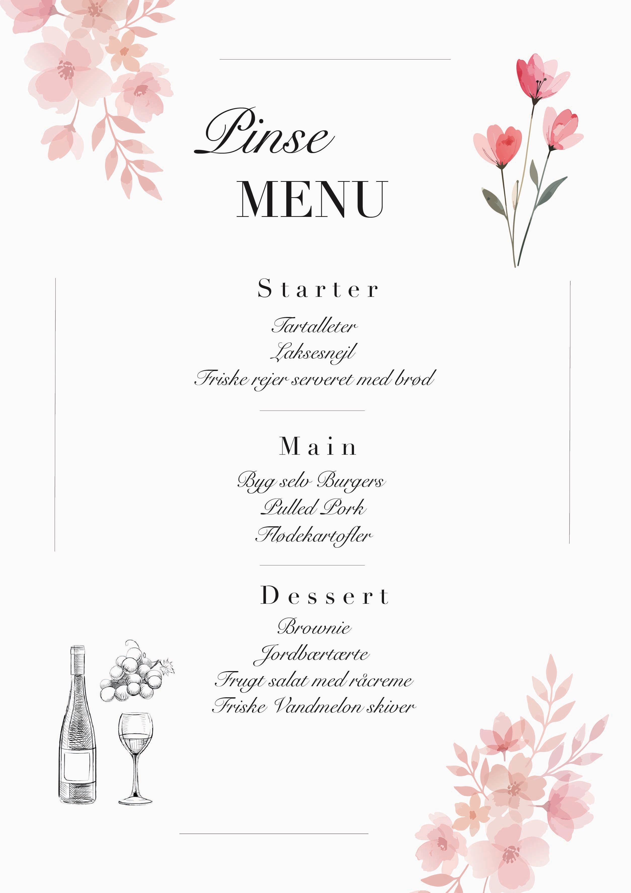

Menu Design
Menu Design
En kreativ menu -design skabt til branding, events og digitale platforme.
PROJEKT INFO
Dette projekt fokuserer på æstetiske menu-design løsninger til restauranter og caféer, med et rent og professionelt udtryk. Løsningerne er udviklet med fokus på brugeroplevelse, designprincipper, farver og brancheidentitet.
Målet var at skabe visuelle billeder, der kan bruges til sociale medier, events, webshops, kampagner og markedsføringsmateriale.
Jeg undersøgte visuelle trends inden for lignede materialer.
Jeg arbejdede med forskellige vektorer, baggrunde, farver og ideér.
Endelige designelementer blev produceret med fokus på kontrast og stemning.


Jeg har fået erfaring med at arbejde med forskellige designprincipper, farver og visuelle elementer for at skabe et æstetisk og funktionelt menu-design.